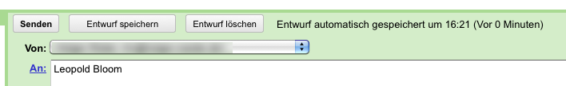

| Usability Pattern | Automatisches Speichern |
|---|---|
| Alias | Auto Save |
| Problem | Benutzer möchten sich nicht selbst darum kümmern, dass Änderungen an Daten gespeichert werden. |
| Lösung |
Speichere Änderungen automatisch. Wenn Benutzer längere Zeit eine Aktion ausführen (z. B.eine E-Mail verfassen), sollten Änderungen in regelmäßigen zeitlichen Abständen (z. B. alle 10 Sekunden, jede Minute) automatisch gespeichert werden. Alternativ kann die automatische Speicherung auch abhängig von der Ausführung einzelner kürzerer Aktionen erfolgen (z. B. jedes Mal nach Durchführung bestimmter Änderungen) |
| Beispiel |
Google Mail: Automatisches Speichern von E-Mail-Entwürfen Google Mail speichert E-Mails, die Benutzer gerade verfassen, in kurzen Abständen automatisch als Entwurf ab.  Automatisches Speichern in Google Mail |
| Nutzungskontext |
|
| Begründung |
Benutzer können sich auf die für sie wesentlichen Aufgaben konzentrieren und müssen nicht daran denken, Änderungen zu speichern. Das System stellt sicher, dass Daten regelmäßig gespeichert werden. Die Gefahr eines Datenverlusts z. B. bei einem versehentlichen Beenden des Systems wird verringert. |
| Risiken, Nachteile, Kosten |
Benutzer erwarten in vielen Nutzungssituationen eine explizite Möglichkeit zum Speichern von Daten. Werden Daten vom System ausschließlich automatisch gespeichert, muss das System Benutzer über die erfolgreiche Speicherung informieren. Andernfalls sind Benutzer in vielen Fällen unsicher, ob ihre Daten tatsächlich gespeichert wurden, und das Vertrauen der Benutzer in das System sinkt. Automatisches Speichern in dokumentbasierten Systemen (z. B. Textverarbeitung) kann dazu führen, dass das System vorhandene Dokumente (in vielen Fällen Dateien) mit aktualisierten Fassungen überschreibt, ohne das Benutzer dies wünschen. Entsprechende Systeme sollten das automatische Speichern nur auf Wunsch der Benutzer aktivieren oder stattdessen eine Sicherheitskopie verwenden. Beim automatischen Speichern muss darauf geachtet werden, dass der Vorgang Benutzer nicht bei ihrer Arbeit mit dem System unterbricht oder ablenkt (z. B. in langsamen Systemumgebungen). Falls doch, sollten Benutzer die Möglichkeit haben, das Speicherintervall anzupassen oder die automatische Speicherung auszuschalten. |
| Zusammenspiel |
Alternative Dokumentwiederherstellung Wenn ein Datenverlust vermieden werden soll, aber Änderungen an den Daten nicht automatisch gespeichert werden sollen (z.B. bei der Arbeit mit dateibasierten Dokumenten, bei denen Änderungen nicht die ursprüngliche Datei überschreiben dürfen), kann alternativ eine Dokumentwiederherstellung angeboten werden. Ergänzung Systemstatus Benutzer können in der Statusanzeige informiert werden, wenn Änderungen automatisch gespeichert wurden. Unverträglichkeit Sicherheitskopie Sicherheitskopien eignen sich für dateibasierte Dokumente, bei denen ein automatisches Speichern nicht sinnvoll ist. Eine Kombination beider Lösungen erscheint nicht angemessen, da für Benutzer nicht unterscheidbar ist, ob Sicherheitskopien auf ihren expliziten Wunsch hin oder automatisch erstellt wurden. |
| Anforderungserhebung |
Überlege, ob Benutzer das automatische Speichern von Änderungen in der jeweiligen Nutzungssituation wünschen. Kläre, ob die automatische Speicherung in regelmäßigen zeitlichen Abständen oder nach Ausführung bestimmter Aktionen erfolgen soll. Auch eine Kombination beider Ansätze ist möglich. Identifiziere ggf. Aktionen, die zu Änderungen führen, die automatisch gespeichert werden sollen. |
| Anforderungsspezifikation |
Spezifiziere globale Vorgaben für den Einsatz des Usability Patterns „ Automatisches Speichern “:
Spezifiziere globale Funktionen (Use Cases) für den Einsatz des Usability Patterns „ Automatisches Speichern “:
Spezifiziere, für welche Interaktionen das Usability Pattern „ Automatisches Speichern “ eingesetzt wird. Annotiere und ergänze dazu vorhandene Use Cases :
|
{kind=link}